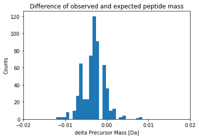

As a continuation to my previous blog on Proteomics with OMSSA, here I extend the analyses to look at an open-access yeast data set. Few open-source efforts to get the mass-spectrometry based proteomics data are PeptideAtlas, MassIVE, PRIDE, Proteome Exchange Consortium. For the current blog, I used a data set from Proteome Exchange Consortium. The original format of the dataset was RAW. I converted this complex version to a much simpler MGF version for the current blog. A nice article on different data formats can be found here.
Let’s take a look at the mgf file:
C:\Users\Viswa\folder_for_analyses>head -n 20 Yeast.mgf
BEGIN IONS
TITLE=index=0
PEPMASS=519.7517
CHARGE=2+
SCANS=16
RTINSECONDS=1.878
149.12 30.216585
149.985 29.74796
175.185 20.990004
177.198 17.410294
201.096 16.743763
230.869 28.351389
243.217 27.75121
255.166 10.026513
272.247 34.915855
273.127 19.958282
281.883 17.084764
290.254 20.235743
294.149 14.525609
300.068 33.84702
The above is a truncated file of a larger mgf file. Each mgf file has few thousands of such scans in most scenarios.
Some of the features found in the mgf format are the peptide mass [PEPMASS], charge state [CHARGE], scan number, retention time and the peak lists. However different tools can result in different mgf formats, however you’ll always see peak lists, peptide mass and the charge state of the peptide.
OMSSA uses the PEPMASS * CHARGE (i.e., 519.7517 * 2 as MH+) as possible peptide mass, and then looks for the match in the database. The sample was digested with trypsin to generate the current raw file. Trypsin cleaves the protein at K/R amino acids. To mimic this situation in-silico, OMSSA digests the protein sequence (in the fasta file) at all K/R seen (both for targets and decoys), and looks for in-silico peptides that have the same mass as observed mass. If the in-silico peptide matches the observed mass from MGF file, it scores the peptide. In OMSSA, you can think of this score as E-value (similar to BLAST scoring). It repeats this process for all the peak lists in the mgf file.
Since this is Yeast data, we need Yeast fasta file. If possible, pick a strain that most likely represents the sample under study. There are multiple databases to get this fasta and in the previous blogs, I mentioned about the NCBI resources. This time, let’s use a protein database UniProt.
Within UniProt, there are different variants of protein sequence. Here, I used SwissProt version of Baker’s yeast. SwissProt has manually curated and very well reviewed protein sequences.
Let’s take a look at the truncated version of the SwissProt fasta file:
C:\Users\Viswa\blastDb>head -n 20 S288c.fasta
>sp|P32768|FLO1_YEAST Flocculation protein FLO1 OS=Saccharomyces cerevisiae (strain ATCC 204508 / S288c) OX=559292 GN=FLO1 PE=1 SV=4
MTMPHRYMFLAVFTLLALTSVASGATEACLPAGQRKSGMNINFYQYSLKDSSTYSNAAYM
AYGYASKTKLGSVGGQTDISIDYNIPCVSSSGTFPCPQEDSYGNWGCKGMGACSNSQGIA
YWSTDLFGFYTTPTNVTLEMTGYFLPPQTGSYTFKFATVDDSAILSVGGATAFNCCAQQQ
PPITSTNFTIDGIKPWGGSLPPNIEGTVYMYAGYYYPMKVVYSNAVSWGTLPISVTLPDG
TTVSDDFEGYVYSFDDDLSQSNCTVPDPSNYAVSTTTTTTEPWTGTFTSTSTEMTTVTGT
NGVPTDETVIVIRTPTTASTIITTTEPWNSTFTSTSTELTTVTGTNGVRTDETIIVIRTP
TTATTAITTTEPWNSTFTSTSTELTTVTGTNGLPTDETIIVIRTPTTATTAMTTTQPWND
TFTSTSTELTTVTGTNGLPTDETIIVIRTPTTATTAMTTTQPWNDTFTSTSTELTTVTGT
NGLPTDETIIVIRTPTTATTAMTTTQPWNDTFTSTSTEITTVTGTNGLPTDETIIVIRTP
TTATTAMTTPQPWNDTFTSTSTEMTTVTGTNGLPTDETIIVIRTPTTATTAITTTEPWNS
TFTSTSTEMTTVTGTNGLPTDETIIVIRTPTTATTAITTTQPWNDTFTSTSTEMTTVTGT
NGLPTDETIIVIRTPTTATTAMTTTQPWNDTFTSTSTEITTVTGTTGLPTDETIIVIRTP
TTATTAMTTTQPWNDTFTSTSTEMTTVTGTNGVPTDETVIVIRTPTSEGLISTTTEPWTG
TFTSTSTEMTTVTGTNGQPTDETVIVIRTPTSEGLVTTTTEPWTGTFTSTSTEMTTITGT
NGVPTDETVIVIRTPTSEGLISTTTEPWTGTFTSTSTEMTTITGTNGQPTDETVIVIRTP
TSEGLISTTTEPWTGTFTSTSTEMTHVTGTNGVPTDETVIVIRTPTSEGLISTTTEPWTG
TFTSTSTEVTTITGTNGQPTDETVIVIRTPTSEGLISTTTEPWTGTFTSTSTEMTTVTGT
NGQPTDETVIVIRTPTSEGLVTTTTEPWTGTFTSTSTEMSTVTGTNGLPTDETVIVVKTP
TTAISSSLSSSSSGQITSSITSSRPIITPFYPSNGTSVISSSVISSSVTSSLFTSSPVIS
C:\Users\Viswa\blastDb>
You can download the fasta file here.
if you read the earlier blog, it is easy to figure out how to use the fasta file for proteomics search with OMSSA.
There is an additional step that needs to be done before the OMSSA search. This step is needed to get better heuristics on the search engine results. Instead of using only the protein sequences found in the SwissProt database, we additionally append the reverse version of the protein sequences to the original fasta file. This is then called target-decoy database. OMSSA then scores the peaks in the mgf file to the peptides obtained from the protein sequences from target + decoy version. OMSSA or other similar database search program then uses the metrics from decoy hits to properly filter out the possible false positives, eventually choosing only the true hits. More information on the target-decoy database search here.
There is an open-source perl script available that does this job of appending decoy version of the fasta file to the target fasta file. The decoy version, in the current blog, will have ###REV### appended to the protein name. You can do a simple string match of the omssa output search results to this ###REV### string to identify and filter out these reverse hits. Here, I will not use a stringent FDR approach as described in the above paper, but use a simple filter based on decoy hits.
I already talked about how to run an OMSSA search in my earlier blog, and there is a github repo to set up the OMSSA searches. So, let’s look at analyzing OMSSA output and report the data using Jupyter Notebook. For the current blog, I converted the original python notebook (.pynb) to markdown and added the text! The markdown, along with figures are then transferred to a github repo which then using jekyll pages is presented here as a blog.
import numpy as np
import pandas as pd
import matplotlib.pyplot as plt
from matplotlib import ticker
# Display multiple columns, common in high-dimensional space (add rows as well)
pd.set_option('display.max_columns', 100)
pd.set_option('display.max_rows', 20)
Here, we read the OMSSA output into a pandas data frame.
omssa_output = pd.read_csv("S288c_run.csv")
If you look at the Peptide column below, the first 2 rows have the same peptide! However, if you notice the Accession, you see that these represent 2 different proteins. Given a peptide hit, it is not trivial which protein it belongs to. So, in the end of this blog, I did additional analyses by collating the peptides to match the protein sequence. The higher the number of peptides the protein represent, the more likely it is a true protein hit.
omssa_output.head()
| Spectrum number | Filename/id | Peptide | E-value | Mass | gi | Accession | Start | Stop | Defline | Mods | Charge | Theo Mass | P-value | NIST score | |
|---|---|---|---|---|---|---|---|---|---|---|---|---|---|---|---|
| 0 | 120 | index=120 | GSIDEQHPR | 0.099394 | 1037.487 | 0 | BL_ORD_ID:50 | 250 | 258 | sp|P06169|PDC1_YEAST Pyruvate decarboxylase is... | NaN | 2 | 1037.490 | 3.803824e-05 | 0 |
| 1 | 120 | index=120 | GSIDEQHPR | 0.099394 | 1037.487 | 0 | BL_ORD_ID:131 | 250 | 258 | sp|P26263|PDC6_YEAST Pyruvate decarboxylase is... | NaN | 2 | 1037.490 | 3.803824e-05 | 0 |
| 2 | 339 | index=339 | TSGRPIKGDSSAGGK | 0.001174 | 1416.728 | 0 | BL_ORD_ID:2647 | 176 | 190 | sp|P47075|VTC4_YEAST Vacuolar transporter chap... | NaN | 3 | 1416.731 | 5.359808e-07 | 0 |
| 3 | 421 | index=421 | TSGRPIKGDSSAGGK | 0.035522 | 1416.729 | 0 | BL_ORD_ID:2647 | 176 | 190 | sp|P47075|VTC4_YEAST Vacuolar transporter chap... | NaN | 2 | 1416.731 | 1.624232e-05 | 0 |
| 4 | 506 | index=506 | NEETSGEGGEDKNEPSSK | 0.028961 | 1892.786 | 0 | BL_ORD_ID:4527 | 76 | 93 | sp|Q02776|TIM50_YEAST Mitochondrial import inn... | NaN | 3 | 1892.789 | 1.991815e-05 | 0 |
omssa_output.columns
Index(['Spectrum number', ' Filename/id', ' Peptide', ' E-value', ' Mass',
' gi', ' Accession', ' Start', ' Stop', ' Defline', ' Mods', ' Charge',
' Theo Mass', ' P-value', ' NIST score'],
dtype='object')
Let’s take a look at the E-value distribution. This is central to understanding output of OMSSA. We have to consider the hits that are meaningful. Let’s plot all the hits.
eps=1e-32 # To take care of zeoes
fig, ax = plt.subplots()
plt.hist(np.log10(eps + omssa_output[' E-value']), bins = 100)
loc = ticker.MultipleLocator(base=2) # thanks again to google!
ax.xaxis.set_major_locator(loc)
ax.set_xlabel('Log10 E-value')
ax.set_ylabel('Counts')
ax.set_title('Score distribution')
fig.tight_layout
The lower the E-value, the better. Since we applied log10 transformation, a value of -5 on the x-axis represents an E-value of 1e-5.
In the OMSSA search, we also searched for oxidation of methionine. This is one of the most common modifications that is present in mass-spec based proteomics experiment. The program also considers other modifications and can be input using the appropriate argument.
To filter out the peptides that are oxidized easily, you can create a new column called “IsMod” and add to dataframe.
# Add IsMod column to see where oxidation is
omssa_output[' IsMod'] = omssa_output[' Mods'].str.match('oxidation', na=False)
If the ‘IsMod’ column is True, then the peptide is oxidized.
Let’s print out the modified peptide spectral matches here. If you look closely at the Peptide column, you will see a lowercase M i.e., m. This represents that particular Methionine is oxidized. If you scroll the below table to the right, you will see that the first Peptide SKQEASQmAAmAEK is modified at 2 positions at M:8 and M:11 as given in the Mods column.
mods_only = omssa_output[omssa_output[' IsMod'].values]
mods_only.head()
| Spectrum number | Filename/id | Peptide | E-value | Mass | gi | Accession | Start | Stop | Defline | Mods | Charge | Theo Mass | P-value | NIST score | IsMod | |
|---|---|---|---|---|---|---|---|---|---|---|---|---|---|---|---|---|
| 55 | 729 | index=729 | SKQEASQmAAmAEK | 0.003606 | 1540.685 | 0 | BL_ORD_ID:6013 | 655 | 668 | sp|P32589|HSP7F_YEAST Heat shock protein homol... | oxidation of M:8 ,oxidation of M:11 | 2 | 1540.687 | 0.000002 | 0 | True |
| 91 | 1001 | index=1001 | YATmTGHHVER | 0.023147 | 1316.591 | 0 | BL_ORD_ID:4636 | 70 | 80 | sp|P09436|SYIC_YEAST Isoleucine--tRNA ligase, ... | oxidation of M:4 | 3 | 1316.593 | 0.000011 | 0 | True |
| 92 | 1005 | index=1005 | YATmTGHHVER | 0.006636 | 1316.593 | 0 | BL_ORD_ID:4636 | 70 | 80 | sp|P09436|SYIC_YEAST Isoleucine--tRNA ligase, ... | oxidation of M:4 | 2 | 1316.593 | 0.000003 | 0 | True |
| 243 | 1754 | index=1754 | TPAEmSRPATTTR | 0.490255 | 1433.174 | 0 | BL_ORD_ID:3809 | 1361 | 1373 | sp|P19097|FAS2_YEAST Fatty acid synthase subun... | oxidation of M:5 | 3 | 1433.695 | 0.000236 | 0 | True |
| 255 | 1823 | index=1823 | TPAEmSRPATTTR | 0.517651 | 1433.690 | 0 | BL_ORD_ID:3809 | 1361 | 1373 | sp|P19097|FAS2_YEAST Fatty acid synthase subun... | oxidation of M:5 | 3 | 1433.695 | 0.000250 | 0 | True |
Define the length column so that we can plot the distribution of length of peptides later.
# Add a length column that represents the length of the peptide
omssa_output[' Length'] = omssa_output[' Peptide'].apply(len)
Define the ‘IsReverse’ column so that we can remove the hits to the decoy database before looking at the distributions.
# Add a IsReverse column to represent if the hit is from target database or the decoy database
omssa_output[' IsReverse'] = omssa_output[' Defline'].str.match('###REV###')
Reverse_yeast_hits_only = omssa_output[omssa_output[' IsReverse'].values]
Note the Defline column i.e., ###REV### in the initial part of the string represents that the protein is a reverse protein sequence.
Reverse_yeast_hits_only.head()
| Spectrum number | Filename/id | Peptide | E-value | Mass | gi | Accession | Start | Stop | Defline | Mods | Charge | Theo Mass | P-value | NIST score | IsMod | Length | IsReverse | |
|---|---|---|---|---|---|---|---|---|---|---|---|---|---|---|---|---|---|---|
| 75 | 872 | index=872 | QETASNKPLKLYSCITR | 0.456971 | 2007.920 | 0 | BL_ORD_ID:9855 | 835 | 851 | ###REV###sp|Q08387|DNLI4_YEAST Reverse sequenc... | NaN | 3 | 2008.042 | 0.000310 | 0 | False | 17 | True |
| 117 | 1103 | index=1103 | RTLEPTSLGGLIEVLR | 0.574082 | 1753.787 | 0 | BL_ORD_ID:11219 | 659 | 674 | ###REV###sp|P38850|RT107_YEAST Reverse sequenc... | NaN | 3 | 1753.010 | 0.000363 | 0 | False | 16 | True |
| 131 | 1179 | index=1179 | KASLLILDDHSDDNK | 0.381089 | 1682.339 | 0 | BL_ORD_ID:10482 | 630 | 644 | ###REV###sp|Q06673|ECM30_YEAST Reverse sequenc... | NaN | 3 | 1682.848 | 0.000249 | 0 | False | 15 | True |
| 167 | 1375 | index=1375 | KASLLILDDHSDDNK | 0.378321 | 1683.785 | 0 | BL_ORD_ID:10482 | 630 | 644 | ###REV###sp|Q06673|ECM30_YEAST Reverse sequenc... | NaN | 3 | 1682.848 | 0.000248 | 0 | False | 15 | True |
| 595 | 3081 | index=3081 | DAAQVAEEVDDER | 0.733552 | 1443.671 | 0 | BL_ORD_ID:11559 | 428 | 440 | ###REV###sp|P46367|ALDH4_YEAST Reverse sequenc... | NaN | 3 | 1445.628 | 0.000367 | 0 | False | 13 | True |
Since we know the hits with lower E-value are probably correct, we should not expect many reverse hits lower than e-value of 1e-3.
# All reverse hits seem to be in 0 to -2 region, which is expected.
eps=1e-32 # To take care of zeoes
fig, ax = plt.subplots()
plt.hist(np.log10(eps + Reverse_yeast_hits_only[' E-value']))
loc = ticker.MultipleLocator(base=1) # thanks again to google!
ax.xaxis.set_major_locator(loc)
ax.set_xlabel('Score in E-value')
ax.set_ylabel('Counts')
ax.set_title('Reverse hits distribution')
fig.tight_layout
From the above distribution, it is clear that there are no reverse hits with E-value lower than 1e-2. So, we can safely consider all the hits below E-value of 1e-2 to be genuine. NOTE that the number of possible true hits in the [0, 1e-2] bin are ignored, as this my focus is on introducing OMSSA search results through jupyter notebook. In general, if you see “X” reverse matches, you expect “X” matches to the forward database as incorrect as well. Say the above list generated 15 ###REV### matches, then a total of 30 matches in the entire list might be false positives. Better methods are using a false discovery rate of 1% instead of a bin cut-off on the scores. Probably, in one of the blogs, I will go through the FDR curves for interpreting peptide-spectral matches or interpreting the protein lists.
subset_yeast_hits_only = omssa_output[~omssa_output[' IsReverse'].values] # See the tilde sign
# Here, we skip the step of filtering the target yeast hits within a FDR (usual norm is to use 1% or these days, even lower at 0.5% FDR)
# Instead we use a simple cut-off. Since we know all the reverse hits are less than 1e-2, we use target hits, that are less than e-value of 1e-2
Target_yeast_hits_only = subset_yeast_hits_only[subset_yeast_hits_only[' E-value'] < 0.01]
Let’s re-plot the hits, focusing only on the “true hits”. An easy way to plot true and false hits can also be found here. Ideally this filtering should be done using false discovery rate, that I mentioned above.
# All reverse hits seem to be in 0 to -2 region, which is expected.
eps=1e-32 # To take care of zeoes
fig, ax = plt.subplots()
plt.hist(np.log10(eps + Target_yeast_hits_only[' E-value']), bins = 100)
loc = ticker.MultipleLocator(base=2) # thanks again to google!
ax.xaxis.set_major_locator(loc)
ax.set_xlabel('Score in E-value')
ax.set_ylabel('Counts')
ax.set_title('Target hits distribution')
fig.tight_layout

Here are top few hits of the target list. If you see the same peptide with the same scan, it most likely means it is coming from a different protein that share the same peptide. This is another down-stream analyses problem that needs to be done correctly. I will write about this later.
Target_yeast_hits_only.head()
| Spectrum number | Filename/id | Peptide | E-value | Mass | gi | Accession | Start | Stop | Defline | Mods | Charge | Theo Mass | P-value | NIST score | IsMod | Length | IsReverse | |
|---|---|---|---|---|---|---|---|---|---|---|---|---|---|---|---|---|---|---|
| 2 | 339 | index=339 | TSGRPIKGDSSAGGK | 1.173798e-03 | 1416.728 | 0 | BL_ORD_ID:2647 | 176 | 190 | sp|P47075|VTC4_YEAST Vacuolar transporter chap... | NaN | 3 | 1416.731 | 5.359808e-07 | 0 | False | 15 | False |
| 30 | 549 | index=549 | SRGESDDSLNR | 1.937602e-03 | 1234.551 | 0 | BL_ORD_ID:877 | 61 | 71 | sp|Q3E754|RS21B_YEAST 40S ribosomal protein S2... | NaN | 2 | 1234.554 | 8.562092e-07 | 0 | False | 11 | False |
| 31 | 549 | index=549 | SRGESDDSLNR | 1.937602e-03 | 1234.551 | 0 | BL_ORD_ID:900 | 61 | 71 | sp|P0C0V8|RS21A_YEAST 40S ribosomal protein S2... | NaN | 2 | 1234.554 | 8.562092e-07 | 0 | False | 11 | False |
| 33 | 583 | index=583 | ANSDCNDKTDCNANNDCSNESDCNAK | 9.257848e-04 | 2992.052 | 0 | BL_ORD_ID:3714 | 581 | 606 | sp|Q08732|HRK1_YEAST Serine/threonine-protein ... | NaN | 3 | 2992.055 | 9.848775e-07 | 0 | False | 26 | False |
| 35 | 632 | index=632 | TKTHDVGDEGGNESTKPK | 1.004113e-10 | 1898.900 | 0 | BL_ORD_ID:6470 | 645 | 662 | sp|P47116|PTK2_YEAST Serine/threonine-protein ... | NaN | 3 | 1898.898 | 6.291435e-14 | 0 | False | 18 | False |
Earlier I mentioned that OMSSA or a similar program scores a hit if the observed peptide mass matches the experimental mass and lies within a certain bin. This bin or tolerance i.e., +/- few ppm or Da around the expected mass is common in search engines. In most of the new high-res instruments, this is approximately 20ppm.
To understand this measure more, 20ppm at 5000Da is 0.1Da. You can expect at most 0.1 Da difference between expected and observed mass for a peptide that weights 5 kilo daltons.
In the below plot, you can see that the distribution is very tight around 0.
fig, ax = plt.subplots()
plt.hist(Target_yeast_hits_only[' Mass'] - Target_yeast_hits_only[' Theo Mass'], bins = 5000)
loc = ticker.MultipleLocator(base=0.01) # thanks again to google!
ax.xaxis.set_major_locator(loc)
ax.set_xlabel('delta Precursor Mass [Da]')
ax.set_ylabel('Counts')
ax.set_xlim([-0.02, 0.02])
ax.set_title("Difference of observed and expected peptide mass")
fig.tight_layout

Another characteristic is the length of the peptide. Here, the data is from a fragmentation technique called Collision Induced Dissociation (CID). There are other fragmentation techniques (like ETD) that generate longer peptides. Longer peptides generally mean higher charge states (i.e, 4+, 5+, 6+ are also common in such ETD spectra). Below, I show the distribution of peptide length and peptide charge.
Target_yeast_hits_only[' Length'].astype('category')
fig, ax = plt.subplots()
plt.hist(Target_yeast_hits_only[' Length'], bins = 100)
loc = ticker.MultipleLocator(base=5) # thanks again to google!
ax.xaxis.set_major_locator(loc)
ax.set_xlabel('Length')
ax.set_ylabel('Counts')
fig.tight_layout

fig, ax = plt.subplots()
plt.hist(Target_yeast_hits_only[' Charge'])
loc = ticker.MultipleLocator(base=1) # this locator puts ticks at regular intervals
ax.xaxis.set_major_locator(loc)
ax.set_xlabel('Charge')
ax.set_ylabel('Counts')
fig.tight_layout

One of the primary goals of this task is to identify the proteins present in the sample. The above list shows the grouping by scan number i.e., each row represents a scan, follwed by a peptide match and hence the protein sequence. To easily visualize which proteins are abundant and to see the peptide list of the protein matches, it is better if we group by proteins.
This is done by groupby function (on protein), followed by peptide counts. We can group either by Accession or Defline of the OMSSA search results. Accession here is a short unique identifier, but we have to search the fasta file to figure out what protein this Identifer represents. Instead, I used Defline column that seems to give the protein description.
group_by_protein = Target_yeast_hits_only.groupby(' Defline')[' Peptide'].value_counts().sort_values(ascending=False)
Let’s see how the grouping looks like.
group_by_protein.head()
Defline Peptide
sp|P00950|PMG1_YEAST Phosphoglycerate mutase 1 OS=Saccharomyces cerevisiae (strain ATCC 204508 / S288c) OX=559292 GN=GPM1 PE=1 SV=3 HGQSEWNEK 8
AGELLKEK 7
sp|P17076|RL8A_YEAST 60S ribosomal protein L8-A OS=Saccharomyces cerevisiae (strain ATCC 204508 / S288c) OX=559292 GN=RPL8A PE=1 SV=4 SKQDASPKPYAVK 5
sp|P29453|RL8B_YEAST 60S ribosomal protein L8-B OS=Saccharomyces cerevisiae (strain ATCC 204508 / S288c) OX=559292 GN=RPL8B PE=1 SV=3 SKQDASPKPYAVK 5
sp|P0C2H7|RL27B_YEAST 60S ribosomal protein L27-B OS=Saccharomyces cerevisiae (strain ATCC 204508 / S288c) OX=559292 GN=RPL27B PE=1 SV=1 KVVIVKPHDEGSK 4
Name: Peptide, dtype: int64
I only showed first few abundant protein hits. Basically each line in the table represents a protein, followed by the peptides that are mapped to this protein, along with the peptide counts. For example, for the PMG1_YEAST, The peptides mapped were HGQSEWNEK (8 matches), AGELLKEK (7 matches). So, the abundant proteins in the mgf file are PMG1, and other ribosomal proteins!
I hope this primer on reporting proteomics results is helpful
The Jupyter notebook used to analyze the OMSSA data, publish figures and generate tables is also provided here for interested users.